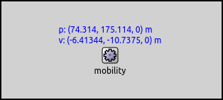
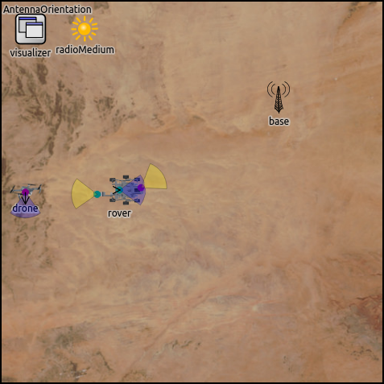

Combining Mobility Models¶
Goals¶
Node positioning and mobility is important for many simulation scenarios, especially those involving wireless communication. In INET, mobility is added to nodes in the form of modules that represent mobility models, such as linear motion or random waypoint. A large number of mobility models have been provided with INET, and they can also be combined.
This showcase focuses on the latter and demonstrates how elementary mobility models (those that describe motion, position and orientation on their own) can be combined to create more complex motion patterns. (Elementary mobility models themselves are demonstrated in Mobility Models.)
4.0Overview¶
INET has two special mobility models that do not define motion on their own, but rather, they allow combining existing mobility models. These modules are AttachedMobility and SuperpositioningMobility. We’ll show example simulations for both.
The model¶
Example simulations in this showcase, except for the last one, use the following network:

The size of the scene is 400x400x0 meters. It contains a configurable number of hosts and an IntegratedVisualizer module to visualize some aspects of mobility.
AttachedMobility¶
AttachedMobility, as its name shows, can “attach” itself to another mobility module, with a certain offset. This “other” mobility module may be part of the same node or may be in another node. The latter allows for implementing simple group mobility where member nodes move in a formation.
This offset is interpreted in the other mobility module’s own coordinate system. I.e. the AttachedMobility module takes the mobility state of the mobility module it is attached to and applies an optional offset to the position and orientation. It keeps its mobility state up-to-date. Position and orientation, and their derivatives are all affected by the mobility where the AttachedMobility is used.
Example: Linear Movement¶
In the first example, host[0] is moving using LinearMobility.
Three more hosts are attached to it at different offsets using AttachedMobility.
The mobilityModule parameter selects the mobility module to attach
to (the parameter has no default, so it must be set). There are also per
coordinate offset parameters for position and orientation:
offsetX,offsetY,offsetZoffsetHeading,offsetElevation,offsetBank
The simulation is run with four hosts. The configuration is defined in the omnetpp.ini file:
*.numHosts = 4
*.host[0].mobility.typename = "LinearMobility"
*.host[0].mobility.speed = 10mps
*.host[0].mobility.initialX = 200m
*.host[0].mobility.initialY = 200m
*.host[0].mobility.initialZ = 0m
*.host[0].mobility.initFromDisplayString = false
*.host[1..3].mobility.typename = "AttachedMobility"
*.host[1..3].mobility.mobilityModule = "^.^.host[0].mobility"
*.host[1].mobility.offsetX = 50m
*.host[2].mobility.offsetY = 50m
*.host[3].mobility.offsetY = -50m
*.host[3].mobility.offsetHeading = 45deg
host[0] starts at the center of the scene, and moves along a straight line using
LinearMobility. The other three hosts have AttachedMobility, and
are attached to host[0]’s mobility module. Their offset is interpreted
in the coordinate system of host[0]’s mobility module. The
coordinate system rotates and translates as host[0] moves.
host[1] is offset 50m along the X axis, host[2] 50m along the Y
axis, host[3] -50m along the Y axis. Also, host[3]’s heading is
offset 45 degrees.
Here is a video of the simulation running:
The hosts keep a formation around host[0]. Note that as host[0]
bounces back from the boundary of the constraint area, there is a jump
in the position of the other hosts.
Example: Concentric Movement¶
In the second example simulation, one of the hosts moves along
a circle, with other hosts “attached”. The example simulation
is run with five hosts. The simulation is
defined in the Attached2 configuration in omnetpp.ini:
*.numHosts = 5
*.host[0].mobility.typename = "CircleMobility"
*.host[0].mobility.cx = 200m
*.host[0].mobility.cy = 200m
*.host[0].mobility.r = 150m
*.host[0].mobility.speed = 40mps
*.host[0].mobility.startAngle = 90deg
*.host[1..4].mobility.typename = "AttachedMobility"
*.host[1..4].mobility.mobilityModule = "^.^.host[0].mobility"
*.host[1].mobility.offsetX = 50m
*.host[1].mobility.offsetHeading = 90deg
host[0] moves along a circle, orbiting the center of the
scene. The other hosts use AttachedMobility, and are
attached to host[0] with various offsets, summarized on the
following image:
{kind=link}
The attached hosts keep the offset from host[0], and they
move circularly as the coordinate system of host[0] moves and rotates:
The relative positions of the hosts are constant. For example, it appears as if
host[4] was using a CircleMobility similar to host[0],
while actually, its position in host[0]’s coordinate system stays constant.
SuperpositioningMobility¶
SuperpositioningMobility is a compound module that can contain several other mobility modules as submodules, and combines their effects. The mobility state (position, orientation, and their derivatives) exposed by SuperpositioningMobility is the sum of the states of these contained submodules.
The use of SuperpositioningMobility is that it allows one to create complex motion patterns by combining other mobility models, and also to combine arbitrary motion with arbitrary initial positioning.
Example: Perturbed Circle¶
In this example simulation, host[0] moves in a circle using
CircleMobility. Some random movement is applied to the circular
motion using GaussMarkovMobility, which is a model to control
the randomness in the movement. The simulation is run with only one host.
You can take a look at the configuration in omnetpp.ini:
*.numHosts = 1
*.host[0].mobility.typename = "SuperpositioningMobility"
*.host[0].mobility.numElements = 2
**.mobility.element[0].typename = "CircleMobility"
**.mobility.element[0].cx = 200m
**.mobility.element[0].cy = 200m
**.mobility.element[0].r = 150m
**.mobility.element[0].speed = 10mps
**.mobility.element[1].typename = "GaussMarkovMobility"
**.mobility.element[1].speed = 10mps
**.mobility.element[1].margin = 0m
**.mobility.element[1].speedStdDev = 0.5mps
**.mobility.element[1].angleStdDev = 0.5deg
**.mobility.element[1].alpha = 0
**.mobility.element[1].constraintAreaMinX = 0m
**.mobility.element[1].constraintAreaMaxX = 25m
**.mobility.element[1].constraintAreaMinY = 0m
**.mobility.element[1].constraintAreaMaxY = 25m
**.mobility.element[1].constraintAreaMinZ = 0m
**.mobility.element[1].constraintAreaMaxZ = 0m
The numElements parameter defines the number of mobility submodules,
which are contained in a submodule vector named element.
Therefore, instead of mobility.typeName = XY, the mobility
submodules can be referenced with mobility.element[0].typeName = XY.
This is also visible if we take a look at the inside of host[0]’s
mobility submodule:
{kind=link}
In the following image you can see that the position and velocity of the SuperpositioningMobility module is indeed the sum of the position and velocity of the contained submodules (visible in the previous image):
{kind=link}
On the following video, you can see the resulting motion:
Example: Orbiting a Node¶
This simulation contains a host that moves in a hexagonal
pattern, and another host that orbits the first host as it
moves. The first host, host[0], uses TurtleMobility, which can
be useful for describing random as well as deterministic scenarios.
The hexagonal pattern is achieved with the following config.xml file:
<movement>
<!-- draw a hexagon -->
<set speed="20" x="143" y="100"/>
<repeat>
<forward d="100"/>
<turn angle="60"/>
</repeat>
</movement>
The other host, host[1], uses SuperpositioningMobility, with the
superposition of an AttachedMobility and a CircleMobility. Here
is the configuration in omnetpp.ini:
*.numHosts = 2
*.host[0].mobility.typename = "TurtleMobility"
*.host[0].mobility.turtleScript = xmldoc("config.xml")
*.host[1].mobility.typename = "SuperpositioningMobility"
*.host[1].mobility.numElements = 2
*.host[1].mobility.element[0].typename = "AttachedMobility"
*.host[1].mobility.element[0].mobilityModule = "^.^.^.host[0].mobility"
*.host[1].mobility.element[1].typename = "CircleMobility"
*.host[1].mobility.element[1].cx = 0m
*.host[1].mobility.element[1].cy = 0m
*.host[1].mobility.element[1].r = 50m
*.host[1].mobility.element[1].constraintAreaMinX = -50m
*.host[1].mobility.element[1].constraintAreaMaxX = 50m
*.host[1].mobility.element[1].constraintAreaMinY = -50m
*.host[1].mobility.element[1].constraintAreaMaxY = 50m
*.host[1].mobility.element[1].speed = -50mps
The mobility of host[1] is attached to host[0]’s mobility,
without an offset. The CircleMobility in host[1] is configured
to circle around 0,0 with a radius of 50m. The constraint area of the
CircleMobility module is interpreted in the coordinate system of the
mobility module it is attached to. By default, it is limited between 0
and 400m as defined in the General configuration. Position 0,0 in
this coordinate system is at the position of host[0]’s mobility. So
when host[1] starts to orbit point 0,0 (host[0]), the
CircleMobility’s coordinates would become negative, and the host
would bounce back. Thus, the constraint area of the CircleMobility
module needs to include negative values for the X and Y coordinates.
The following video shows the resulting movement of the hosts:
Example: Mars Rover¶
The following simulation shows how the AttachedMobility and SuperpositioningMobility models can be used to orient antennas independently from the orientation of their containing network node. The simulation contains the following nodes:
rover:A Mars rover moving along a straight line.drone:A drone orbiting around the center of the scene.base:A base station with a fixed position.
The following image shows the initial layout of the scene:
{kind=link}
By default, radio modules contain antenna submodules, whose positions are taken into account when simulating wireless signal transmission and reception. In network nodes (more specifically, in those that extend LinkLayerNodeBase), the antenna module uses the containing network node’s mobility submodule to describe the antenna’s position and orientation. Thus, by default, the position and orientation of the antenna (where the signal reception and transmission take place) are the same as the position and orientation of the containing network node. However, antenna modules have optional mobility submodules. The antenna’s mobility submodule allows the network node to have antennas whose position and orientation are different from those of the network node.
Such antennas can be oriented independently of the network node’s orientation. The antenna’s position can also be independent of the containing network node’s position. However, in many cases, it makes more sense to attach the antenna position to the network node’s position, with some offset. This allows for creating nodes that are extended objects (as opposed to being point objects).
Note that antenna orientation is only relevant with directional antennas. This example uses isotropic antennas (and there is no communication) because the goal is to just demonstrate how antennas can be oriented arbitrarily.
The scenario for the example simulation is the following: a Mars rover prototype is being tested in the desert. The rover moves in a straight line and has two antennas. It uses them to communicate with a base and a nearby circling drone. Each antenna is oriented independently. One of the antennas tracks the drone, the other one is directed at the base.
The rover is configured to use LinearMobility to move on the
scene. The drone uses CircleMobility to circle around the
center of the scene. The rover has two wireless interfaces, and
thus, two antennas, which each have a mobility submodule. The configuration in
omnetpp.ini related to antenna mobility is the following:
*.rover.wlan[*].radio.antenna.mobility.typename = "SuperpositioningMobility"
*.rover.wlan[*].radio.antenna.mobility.numElements = 2
# rover's antenna mobility element[0] (attachedMobility)
*.rover.wlan[*].radio.antenna.mobility.element[0].typename = "AttachedMobility"
*.rover.wlan[*].radio.antenna.mobility.element[0].mobilityModule = "^.^.^.^.^.mobility"
*.rover.wlan[0].radio.antenna.mobility.element[0].offsetX = 45m
*.rover.wlan[0].radio.antenna.mobility.element[0].offsetY = -5m
*.rover.wlan[1].radio.antenna.mobility.element[0].offsetX = -47m
*.rover.wlan[1].radio.antenna.mobility.element[0].offsetY = 9m
*.rover.wlan[1].radio.antenna.mobility.element[0].faceForward = false
# rover's antenna mobility element[1] (facingMobility)
*.rover.wlan[*].radio.antenna.mobility.element[1].typename = "FacingMobility"
*.rover.wlan[*].radio.antenna.mobility.element[1].sourceMobility = "^"
*.rover.wlan[0].radio.antenna.mobility.element[1].targetMobility = "^.^.^.^.^.^.base.mobility"
*.rover.wlan[1].radio.antenna.mobility.element[1].targetMobility = "^.^.^.^.^.^.drone.mobility"
*.rover.wlan[*].radio.antenna.mobility.element[1].initial* = 0m
*.rover.wlan[*].radio.antenna.mobility.element[1].initFromDisplayString = false
Each antenna needs to be attached to the network node, and also face
towards its target. Thus each antenna has a SuperpositioningMobility
submodule. element[0] of the array is an AttachedMobility, and the
antenna’s position is attached to and offset from the position of the
host. element[1] is a FacingMobility, the antenna tracks its target.
For demonstration purposes, we chose the offsets of the antennas to be unrealistically large.
The following video shows the results:
Sources: omnetpp.ini, MobilityShowcase.ned